Planners & Trackers
2027 Habit Tracker
Track up to 12 habits for all of 2027 in Google Sheets or Excel.
Inside: Settings · 12 month tabs (Jan to Dec) · Dashboard
View details45 templates
Every planner and template, sorted by category.
Planners & Trackers
Track up to 12 habits for all of 2027 in Google Sheets or Excel.
Inside: Settings · 12 month tabs (Jan to Dec) · Dashboard
View details
Planners & Trackers
Stuck on a big task? Break it into small steps and see the next step for every open task in one list, with % done and minutes left.
Inside: Settings · Tasks · Steps
View details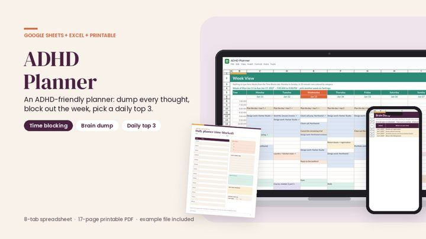
Planners & Trackers
One place for every thought, and a week you can see.
Inside: Settings · Brain Dump · Time Blocks
View details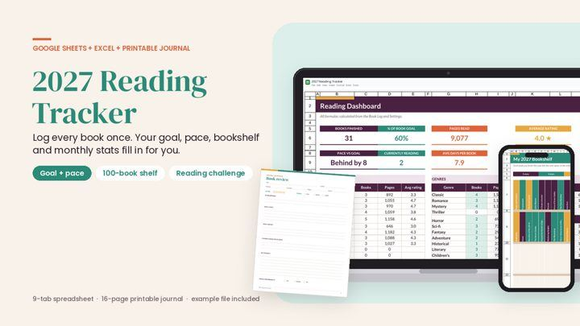
Planners & Trackers
Set a reading goal for 2027 and actually see how you're doing.
Inside: Book Log · Dashboard · Bookshelf
View details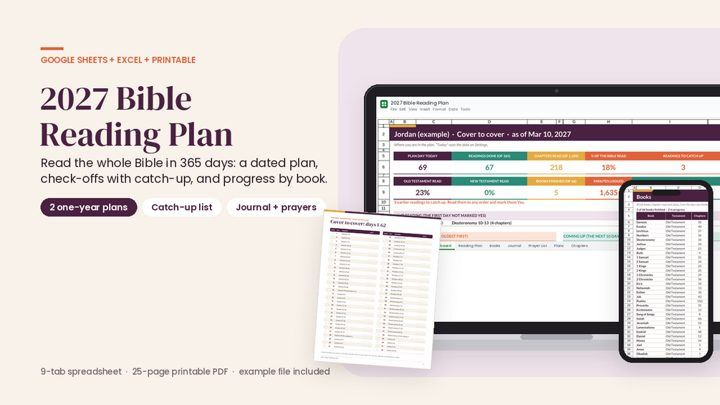
Planners & Trackers
Read the whole Bible in 2027, or start any day you like.
Inside: Settings · Reading Plan · Dashboard
View details
Budget & Money
Keep your side-hustle money organized all year, then hand it to your preparer or tax software in one file.
Inside: Spreadsheet tracker (Google Sheets and E · Both 2026 IRS business mileage rates bui · Business-use % for mixed costs such as y
View details
Budget & Money
Two printables that work together. The Low-Buy Kit is for setting your spending rules for 2027 and tracking them.
Inside: Printable PDF, 15 pages, US Letter · money snapshot · 3-month spending audit
View details
Budget & Money
Want to spend less in 2027 without a rigid no-buy year?
Inside: Printable PDF, 15 US Letter pages · Spreadsheet tracker (.xlsx; opens in Goo · Two copies of the sheet
View details
Budget & Money
Monthly budgets are hard to use when the money arrives every week or every other Friday.
Inside: Paycheck split A and B (pages 2–3) · Bills checklist (page 4) · Expense log (pages 5–6)
View details
Budget & Money
Most budgets are monthly, but you get paid by the paycheck.
Inside: Generates every 2027 payday from your sc · Assigns each bill to the paycheck that c · Paycheck Plans
View details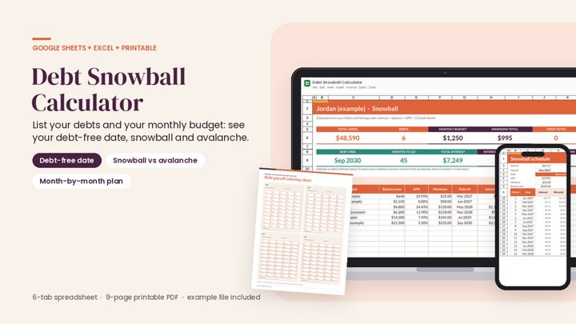
Budget & Money
See your debt-free month before you start.
Inside: Settings · Debts · Snowball and Avalanche
View details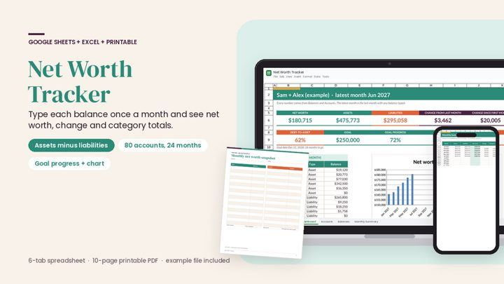
Budget & Money
See what you own minus what you owe, month by month.
Inside: Settings · Accounts · Balances
View details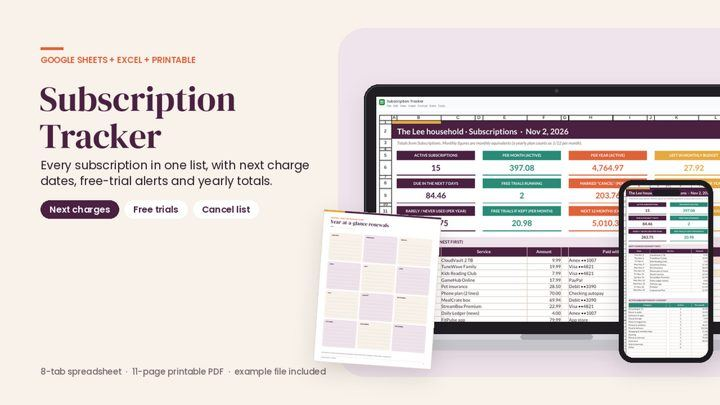
Budget & Money
Know what renews, when, and what it really costs per year. List each subscription once with its cost, billing cycle and one charge date you know.
Inside: Subscriptions · Billing cycles · Dashboard
View details
Budget & Money
Every holiday cost in one spreadsheet: gifts by person, food, decorations, travel, cards and wrapping.
Inside: Dashboard · Gift Budget by Person · Gift List
View details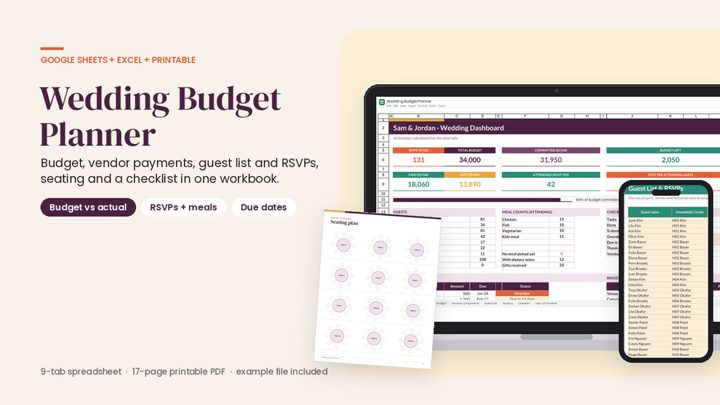
Budget & Money
Know where the wedding budget stands before you sign the next contract.
Inside: Dashboard · Budget · Vendors & Payments
View details
Meal Prep & Recipes
If deciding what to eat at 6 p.m. keeps ending in takeout, cook twice a week instead.
Inside: Egg & Veggie Bake (breakfast) · Overnight Protein Oats (breakfast) · Chicken Burrito Bowls (lunch)
View details
Meal Prep & Recipes
Eating high-protein usually means paying a lot for protein bars and chicken breast. It doesn't have to.
Inside: How the plan works · Grocery budget worksheet · Protein-per-dollar cheat sheet for compa
View details

Meal Prep & Recipes
Every recipe you own, in one list you can sort and search.
Inside: Recipe Index · Ingredients & Steps · Recipe Card
View detailsCareer & Business
Twenty applications in, it gets hard to remember where you applied, when you followed up and who you're still waiting on.
Inside: Application log (pages 2–3) · Resume checklist (page 4) · Interview prep (page 5)
View details
Career & Business
Know where you applied, and when to follow up. A clean 1-page log for your job search. Write down each application on the day you send it.
View details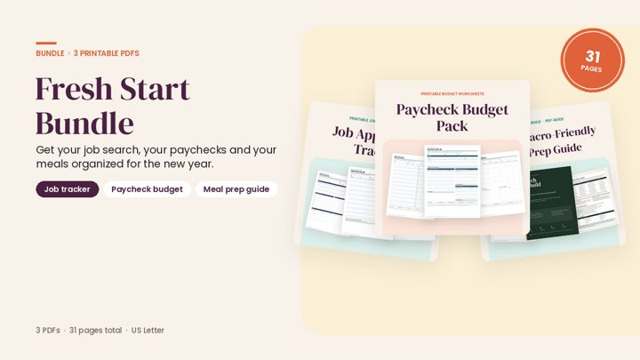
Career & Business
A fresh start, on paper. Three PDFs for the three things that pile up first: the job search, the paychecks and dinner.
Inside: Job Application Tracker (6 pages) · Paycheck Budget Pack (8 undated pages) · Batch & Build
View details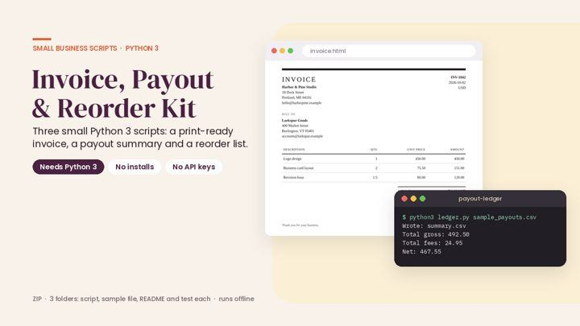
Career & Business
You sell online, not write software, but you still have to send invoices, add up payouts and work out what to restock.
Inside: Invoice Kit (invoice-kit/) · Payout Ledger (payout-ledger/) · Reorder List (reorder-list/)
View details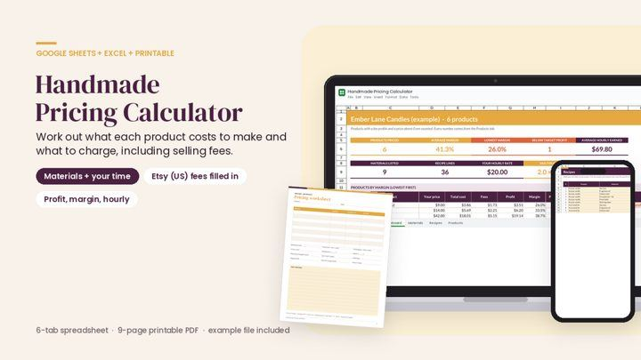
Career & Business
Know what each item costs and what to charge.
Inside: Settings · Materials · Recipes
View details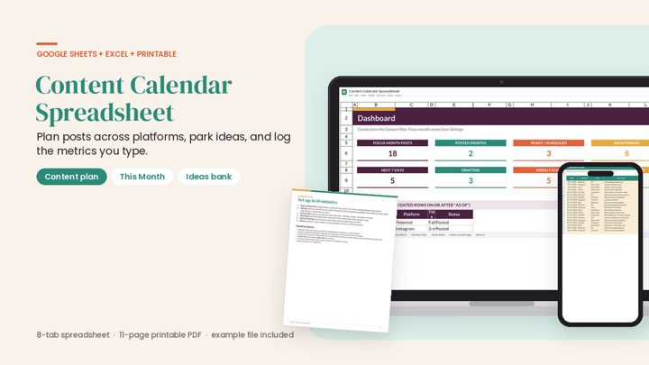
Career & Business
Stop posting from a notes app and hoping.
Inside: Content Plan · This Month · Dashboard
View details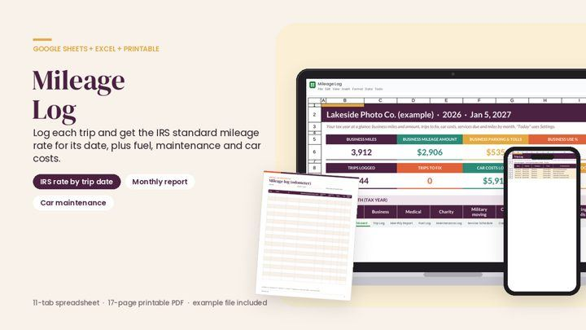
Career & Business
2026 has two IRS business mileage rates: 72.5 cents a mile through June 30 and 76 cents from July 1.
Inside: Settings · Trip Log · IRS Rates
View details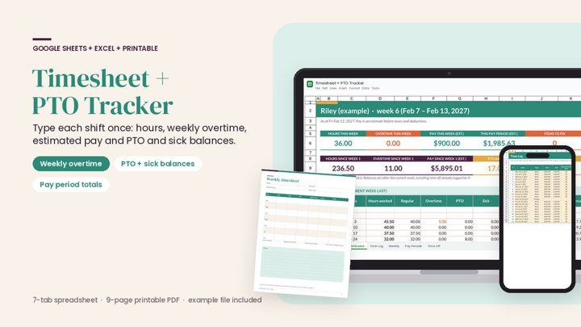
Career & Business
Check your hours and your paycheck. Type each shift once: date, start, end and unpaid break.
Inside: Settings · Time Log · Weekly
View detailsNursing & Study
Log every question set and practice test, and see your % correct by topic and by test plan area so you know where to spend the next hour.
Inside: Settings · Study Plan · Study Log
View detailsNursing & Study
Licenses, life support cards, specialty certifications and employer education all renew on different dates with different hour requirements.
Inside: Settings · Licenses · Certifications
View details
Nursing & Study
A report sheet keeps your patients, tasks and handoff notes straight for a whole shift.
Inside: 1-patient report sheet · 2-patient report sheet · 4-patient report sheet
View details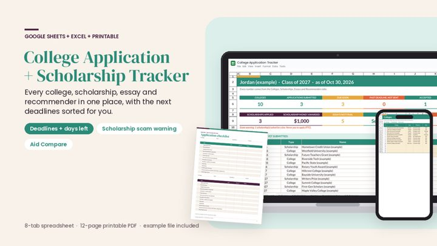
Nursing & Study
Every college, scholarship, essay and recommendation letter in one place.
Inside: Settings · Dashboard · Colleges
View details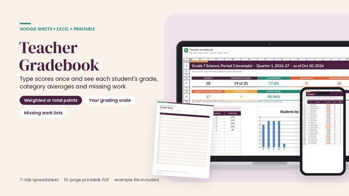
Nursing & Study
Type each score once. List your students, add each assignment with its category and points, then type scores: a number, M for missing or EX for excused.
Inside: Settings · Roster · Gradebook
View details
Health & Fitness
Plan the week. Log every set. See what added up. A monthly calendar of "leg day" sticky notes falls apart by week three.
Inside: Weekly Plan · Workout Log · Exercise Library
View details
Health & Fitness
One reading is a snapshot; a log over time shows the pattern. Type the date, time and both numbers each time you measure.
Inside: Settings · Readings · Dashboard
View details
Health & Fitness
"What medicines does he take?
Inside: Family Profiles · Medications · Allergies & Conditions
View detailsHealth & Fitness
See where your game stands.
Inside: Settings · Courses · Rounds
View details
Family & Baby
Your registry, budget and baby prep in one file.
Inside: Settings · Registry Checklist · Budget
View detailsFamily & Baby
When was the last feed, and which side was it?
Inside: Dashboard · Feeding · Diapers
View details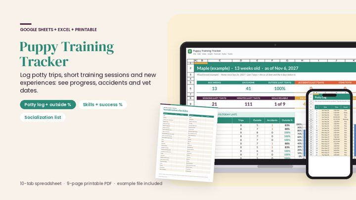
Family & Baby
See your puppy's progress in numbers.
Inside: Settings · Daily Schedule · Potty Log
View detailsBudget & Money
Know where the wedding budget stands before you sign the next contract.
Inside: Dashboard · Budget · Vendors & Payments
View detailsBudget & Money
Every holiday cost in one spreadsheet: gifts by person, food, decorations, travel, cards and wrapping.
Inside: Dashboard · Gift Budget by Person · Gift List
View details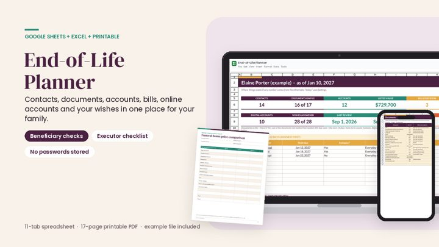
Family & Baby
If something happened to you, would your family know who to call, where the will is and which accounts you have?
Inside: Settings · Dashboard · Contacts
View details
Home & Travel
After a fire, a break-in or a burst pipe, the insurer asks what you lost.
Inside: Settings · Inventory · Rooms
View details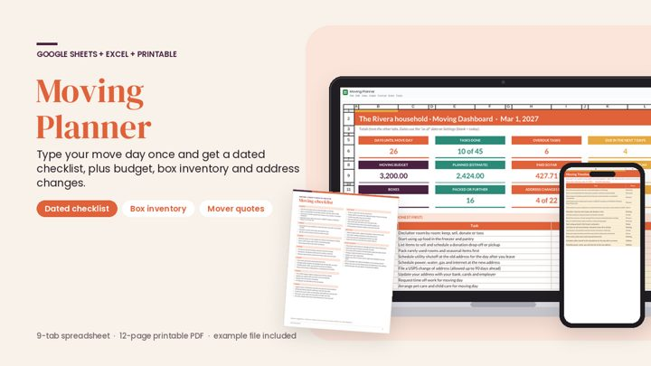
Home & Travel
Type your move day once, and the whole checklist gets dated. 46 starter tasks run from 8 weeks before move day to a month after.
Inside: Timeline · Dashboard · Mover Quotes
View details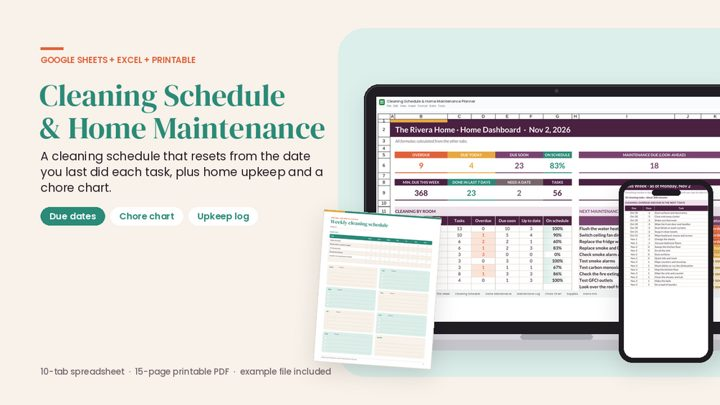
Home & Travel
A cleaning schedule that does not fall apart after one busy week. Instead of "Monday is bathrooms", every task has a frequency and a Last done date.
Inside: Cleaning Schedule · This Week · Home Maintenance
View details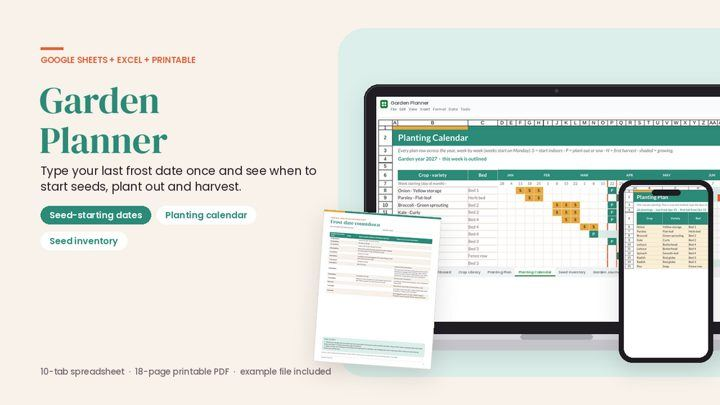
Home & Travel
"Start indoors 6-8 weeks before your last frost." This planner does the counting.
Inside: Settings · Crop Library · Planting Plan
View details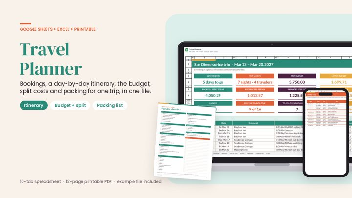
Home & Travel
One trip, one file.
Inside: Dashboard · Bookings · Itinerary + Day by Day
View details